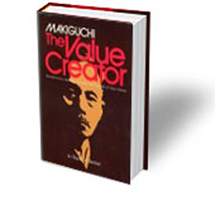
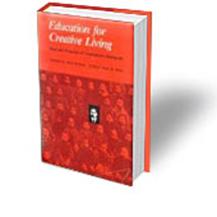
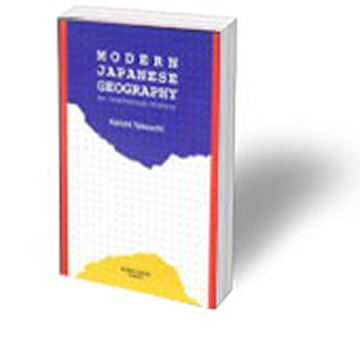
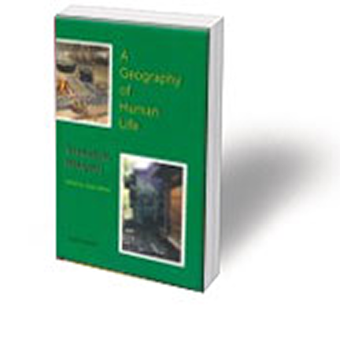
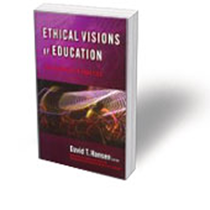

-

마키구치, 가치창조자
저자 : 데일 M. 베델
출판 : 1973년, 웨더힐 출판사
-

창조적 삶을 위한 교육
저자 : 데일 M. 베델
출판 : 1989년, 아이오와 주립대학 출판사
-

근대 일본 지리학
저자 : 다케우치 게이이치
출판 : 2000년, 코콘 쇼인 출판사
-

인생지리학
저자 : 마키구치 쓰네사부로
편집 : 데일 M. 베델
출판 : 2002년, 카도겝 출판사
-

교육의 목적-가치창조
저자 : 앤드루 거버트 & 몬테 조피
수록 : 『교육 윤리관』, 편집자 D.T. 한센
출판 : 2007년, 티처스 컬리지 출판사